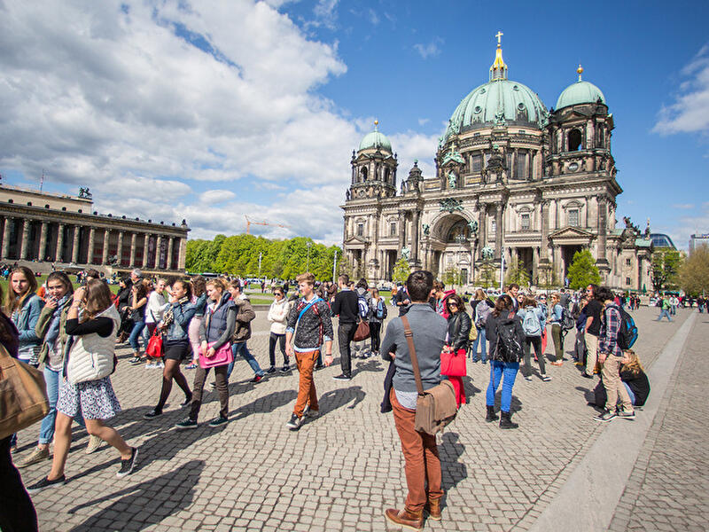
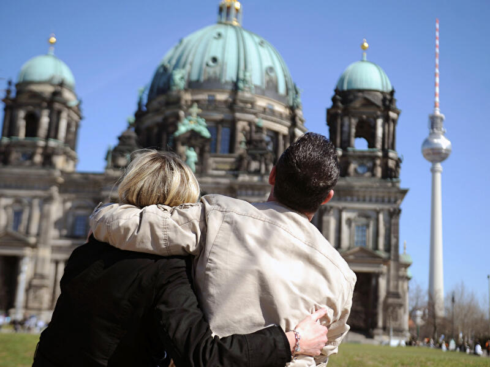

Sehenswürdigkeiten

© dpa
Top-Sehenswürdigkeiten
Diese Attraktionen dürfen Sie nicht verpassen!

© dpa
Sehenswürdigkeiten nach Thema
Die wichtigsten Sehenswürdigkeiten nach Themen geordnet.

© visitBerlin, Foto: Wolfgang Scholvien
Alle Sehenswürdigkeiten
Berlins Sehenswürdigkeiten auf einen Blick.
Berlin-Informationen

© dpa
Öffentlicher Nahverkehr
Öffentlicher Nahverkehr
Schnell und unkompliziert durch Berlin mit S-Bahn, U-Bahn, Bus und Tram. Informationen zum Berliner Nahverkehr mit Fahrpreisen und Liniennetzen. mehr
© dpa
Sharing: E-Roller, Rad und Auto
Ob E-Scooter, Fahrrad, E-Roller oder Mietauto: Zahlreiche Anbieter in Berlin bieten Sharing unterschiedlicher Verkehrsmittel an. mehr

© dpa
Berlin-Wetter
Das aktuelle Wetter in Berlin mit Vorhersagen, Regenradar, Unwetterwarnungen und weiteren Wetterdaten. mehr
Touren durch Berlin

© JFL Photography - stock.adobe.com
Dampferfahrten & Schiffstouren
Berlin vom Wasser aus entdecken: Schiffstouren durch die Innenstadt, ins Umland oder mit Party an Bord. Touren, Anlegestellen, Tickets und mehr

© dpa
Stadtrundfahrten
Stadtrundfahrten mit dem Bus, Hop-on Hop-Hoff-Touren oder Bustouren in Kombination mit Schiffstouren. Plus: Tipps zur selbst organisierten Stadtrundfahrt. mehr

© dpa
Alle Sehenswürdigkeiten
Berlins Sehenswürdigkeiten auf einen Blick.
Insider-Tipps

© dpa
Berlin für Abenteurer
Abenteuer in Berlin erleben: Ungewöhnliche Orte, Lost Places, neue Perspektiven und unvergessliche Erlebnisse. mehr

© dpa
Berlin für Romantiker
Berlin für Romantiker, Schwärmer, Himmelsstürmer, Phantasten, Träumer und Weltverbesserer: Ideen und Orte.

© dpa
Alle Insidertipps
Insider-Tipps, ungewöhnliche Orte und neue Ideen für Berlin-Besucher abseits der ausgetretenen Pfade. mehr
Berlin entdecken

© dpa
Zoos & Tierparks
Tiere aus aller Welt in Berlin: Zoos, Tierparks, Streichelzoos und öffentliche Tiergehege in Berlin. mehr

© dpa
Parks & Gärten
Gartenkultur in Vollendung oder Wiesen, Bäume und Blumen: In Berlins Parks und Gärten ist Platz für alles. mehr

© dpa
Spaziergänge & individuelle Touren
Spaziergänge, Touren und Rundgänge durch Berlin: Streifzüge für Flaneure in der Hauptstadt. mehr